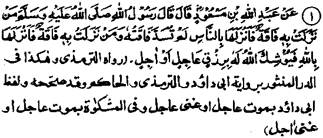
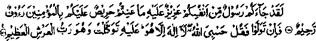
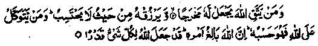
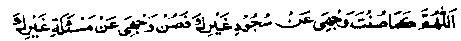

Chapter Six
Section (d)
Ahadith on the Foregoing Subjects (Concerning the Excellence of Tawakkul)
Hadith 1

Ibne Mas’ud Radhiallaho anho relates that Rasulullah Sallallaho alaihe wasallam said, ‘If one who suffers from starvation approaches other men, his suffering will not come to an end; but if he approaches Allah Ta'ala (and beseeches His favour), He will provide livelihood for him sooner or later.
Note: The sentence, ‘If one who suffers from starvation approaches other men, his suffering will not come to an end, means that he will ever remain needy. If, through begging from people, one of his needs gets fulfilled and the state of neediness appears to have vanished for the time being, he will soon find himself facing another need, even more urgent than the one he faced before, and will be obliged to beg from people again, thus continuing in a state of neediness. On the other hand, if he places his need before Allah Ta'ala, He wl definitely fulfil his present need without letting other needs arise, and also provide against the needs which might arise in future.
Under Hadith Eight in Chapter One, Part One of this book, we have already quoted a Hadith related by Abu Kabshah Radhiallaho anho to the effect that he heard Rasulullah Sallallaho alaihe wasallam saying; "There are three things which I swear to be true’. Among these, he mentioned, ‘When a man opens a door for begging Allah Ta'ala opens for him a door to want and poverty.’ In the same context, we have also quoted another Hadith on the authority of Abdur Rahman Ibne‘Auf Radhiallaho anho. That is why we see that those who beg from door to door always remain needy and destitute. In another Hadith, it has been related that ‘If one who suffers from starvation and poverty, approaches Allah Ta'ala, He will soon grant him relief either by an early death or by timely provision.’
‘Early death’ has been interpreted as meaning the death of the afflicted person himself, who is granted death as a relief. According to another interpretation, early death means the death of someone else which becomes an occasion for the grant of provisions tor the starving man who, for example, inherits a large fortune or receives a handsome legacy from the property of the deceased person. We have seen and heard about many such cases in which a person dying in Makkah left a will to the effect that all his property should be sold and the amount remitted to such and such a person living in India.
There was once a notorious robber among the Kurds (the name of a tribe in the Middle East). He narrates his own story: Once I was going with my gang of robbers with the intention of a dacoity. We stopped to take rest at a place where we saw three date-palms, of which two were laden with fruit but the third was dry and barren. Time and again, a sparrow came to one of the green trees, took some fresh dates in its beak and flew across to the dry palm. We were greatly surprised. After I had counted ten trips of the bird, it occurred to me that I should climb the tree and see what it was doing with the dates.
I climbed up to the top of the palm and saw a blind snake lying there with its mouth wide open: the sparrow had been putting fresh dates into the mouth of this blind snake! The sight (of a sparrow feeding a blind snake) awakened my conscience and I was moved to tears. I cried unto Allah Ta'ala, ‘O Allah! When this snake, which Your Rasul Sallallaho alaihe wasallam has commanded us to kill, became blind, you appointed a sparrow to provide sustenance for it. And I, who am Your slave and believer in "Tauheed’, have been destined to loot the people. At this, I heard a voice speaking to me, from within my heart, thus: "The door towards repentance is open to every body, at all times.’ Instantly I broke the sword with which I used to rob the people and (in the frenzy of remorse), began to throw dust on my head. I wept and cried unto Allah, Forgive me, O Lord!’ A Voice from the Unseen whispered in my heart, ‘We have forgiven you! We have forgiven you!’ After a short while, I rejoined my companions. They wanted to know what had happened to me. I said, ‘I was led astray and was estranged from My Lord. Now I have made peace with Him’. And I told them the whole story. They said, ‘We also will make peace with our Lord’, and they broke their swords, too. We abandoned all our looted property there, put on ‘Ihraam’ (the white garb of a pilgrim) and set out to Makkah for Hajj. After travelling for three days, we reached a village where we came across a blind old lady. She asked, ‘Is there any Kurd among you, so and so by name? (here she named me), On being told that there was, she took out some garments and said, ‘My son died three days ago and these clothes were his property. Ever since he died, I dream every night that I see Rasulullah Sallallaho alaihe wasallam commanding me to give these garments to such and such a Kurd!’ I took the garments from her and we all put them on. (Raudh).
In this story, there are two incidents with a deep moral lesson. Firstly, the providential arrangement for providing sustenance to the blind snake and, secondly, the gift of garments granted by Rasulullah Sallallaho alaihe wasallam to the Kurd. When Allah Ta'ala wants to favour someone, it is quite easy for Him to create means to that end, as it is He alone Who creates all means, both of prosperity and adversity. And, it was by virtue of their sincere repentance that these Kurds were granted the gift of garments from Rasulullah Sallallaho alaihe wasallam, which is in itself a great honour and a worthy privilege. Moreover, the story illustrates how, sometimes, Allah Ta‘ala grants favours to a needy person through a speedy death! We have heard about many such cases in which a dying man made a will leaving a portion of his property to a particular person.
Ibne Abbas Radhiallaho anho relates in a Hadith that Rasulullah Sallallaho alaihe wasallam once said: "If anyone is hungry or in need and he conceals it from others, it will be due from Allah Ta'ala to grant him a year's provision from lawful sources". (Mishkaat)
It is related in another Hadith that "If anyone is hungry or in need but conceals it from others, and asks Allah Ta'ala for help, Allah Ta'ala makes arrangements for him, through which he gets a year’s sustenance from lawful (Halal) sources’. (Kanz)
In still another Hadith it is said: ‘Whosoever begs ample provisions from Allah Ta’ala, these are granted to him; and whosoever asks for self-control of ones desires and passions, Allah Ta’ala grants him the same; and the upper hand (the hand of the giver) is better than the lower hand (the hand of the receiver); and no one opens the door towards begging, without having the door opened for him by Allah Ta’ala towards poverty.
Once Ali Radhiallaho anho, on hearing a person begging from people in the plain of ‘Arafaat, struck him with a whip and said, "On this day and in this place, do you beg from anyone but Allah Ta’ala" Rasulullah Sallallaho alaihe wasallam is reported to have said, "Whosoever opens a door towards begging, Allah Ta'ala opens for him a door towards want and destitution, both in this world and the Hereafter. And whosoever opens a door for granting favours, seeking thereby the pleasure of Allah Ta’ala, opens for himself a door for abundance both in this world and in the Hereafter."
Another Hadith says, "Whosoever opens a door for begging, Allah Ta’ala opens for him a door towards want and poverty. It is better for one of you to take a rope and bring a load of firewood on the back, sell it and thereby earn the daily bread than that he should beg from people, whether they give him anything or refuse him!" Another Hadith says, ‘Whosoever opens a door for granting favours be it by way of charity to the poor or through spending money for joining bonds of relationship, Allah Ta’ala grants him plenty of everything (i.e. increase in wealth). And whosoever opens a door towards begging, with the intention of increasing his own wealth, it only leads him to a worse destitution.’
Imraan bin Husain Radhiallaho anho reported Rasulullah Sallallaho alaihe wasallam as saying: "He who turns to Allah Ta’ala alone for help, Allah Ta’ala takes upon Himself the responsibility to fulfil all his needs and provides for him from sources he could never imagine; and he who makes this world his sole concern, Allah Ta’ala leaves him to the world (i.e. he is left to toil on his own, without help from Allah Ta’ala, and reap worldly benefits according to the extent of his labour).
Abu Zarr Radhiallaho anho relates that Rasulullah' Sallallaho alaihe wasallam once said to him: ‘I counsel you to observe fear of Allah Ta’ala, both secretly and openly; when you fall into a sin or do any wrong, do a good deed (to atone for it). Do not ask anyone for anything; do not accept a trust and do not agree to be a Qadhi between two persons (as the job of a Qadhi is delicate, not everybody can be equal to it)’. It is related in another Hadith, "He who is pleased with the little that he gets, cultivates contentment and puts his trust in Allah Ta'ala, is saved from the labour of earning livelihood"
It occurs in another Hadith, "Let him, who wishes to become the most powerful person, put his trust in Allah Ta'ala; let him, who wishes to become the richest person, place more reliance on what Allah Ta'ala possesses than he places on what he himself possesses; let him, who wishes to become the most honoured person, observe piety". (We often observe that a man’s piety influences people more than anything else. The more advanced anybody is in piety. the greater is the regard and esteem for him in the hearts of people).
Wahb Rahmatullah alaihe relates that Allah Ta'ala says, "When my bondsman puts his trust in Me, I would find a way out for him, even if the skies and the earth were to join together in treachery against him." Ibne Abbas Radhiallaho anho says, "Allah Ta'ala sent a revelation to Isaa Alaihissalam, ‘Put absolute trust in Me, for I shall take upon Myself the responsibility to fulfil all your needs. Choose no one as your protecting friend other than Me, lest I should forsake you’"
It has been narrated in many Ahadith that when the son of Auf Ibne Maalik Radhiallaho anho was taken prisoner (by the nonbelievers), they bound him tightly with leather-straps so that be should not escape. He was kept without food and most harshly treated. He, however, managed to send word to his father, informing him about his sad plight and requesting Rasulullah Sallallaho alaihe wasallam to pray for his release. When Rasulullah Sallallaho alaihe wasallam was told of this, he said, "Send someone to him with the word that he should observe piety (Taqwaa), put his trust in Allah Ta'ala and make a point of reciting this verse every morning and evening:"

There hath come unto you a Rasul from amongst yourselves, grievous unto him is aught that distresses you, full of concern for you, for the believers full of pity, merciful. Now if they turn away (O, Muhammad) say: Allah sufficeth me. There is no God save Him. In Him have I put my trust, and He is Lord of the magnificent Throne. (at-Taubah: 128-29)
When the message reached him, he began to recite this Ayat with the result that, one day, the straps broke of themselves. He escaped from their captivity and also brought home with him some animals of the non-believers captured as booty.
Ibne Abbas Radhiallaho anho says that whosoever recites this verse, at a time when he fears injustice from a ruler, attack by a wild animal or getting drowned in a river, will escape any harm, in-shaa-Allah (if Allah wills it so). A version of the Hadith says that the Sahabi Radhiallaho anho was-also advised to recite the following Du‘aa frequently:
‘There is no might and no power except in Allah’.
The following Ayaat were also revealed concerning this incident

And for him who fears Allah, (observes ‘Taqwaa’) Allah Ta'ala ever appoints a way out; and He provides for him from quarters whence he has no expectation; And whosoever puts his trust in Allah, He will suffice for him. (at-Talaq: 2-3)
Little could this Sahabi Radhiallaho anho imagine that Allah Ta'ala had decreed any part of this sustenance from the property of those (non-believers) who were persecuting him so cruelly.
A Dervish narrates his own story: I lived on the side of a hill with one of my friends and we spent most of our time in prayers and devotions. My friend lived on grass, etc., but for me Allah Ta'ala had so arranged, as a special favour, that a doe would visit me everyday.
It would come and stand beside me, with its legs wide apart; I would suck its milk and it went away. Time went by, but the doe never failed to come and I sucked its milk daily. One day, my friend who lived a little farther away from my place came to me and said, "A caravan of travellers has come to stay at a nearby place. Let us go to them.’ We might perchance get some milk and other food from them". At first, I refused to go with him but, when he insisted on going, I agreed. We went there ani they entertained us with food. Then we came back to our places. Since that day, I waited in vain for the doe to come at its usual time, but it never turned up. Many days passed but the doe did not come. Then I realised that, owing to the evil effect of my (sinful) failing in Tawakkul, Allah Ta'ala had discontinued the sustenance which used to reach me without my having to bother about it".
The author of ‘Raudh’ writes: "Apparently there were three sins involved in his going to the caravan: first, failure to observe the Tawakkul to which he was committed; secondly, greediness and failure to be content with the sustenance which he got without any bother; thirdly, taking doubtful food which deprived him of good food." The story is quite instructive. Sometimes, we lose the bounties of Allah Ta'ala owing to our greed and avarice. Although seeking help from people brings immediate apparent benefits, its evil effects deprive us of many bounties of Allah Ta'ala, which are being bestowed upon us without our asking for them and without our feeling obliged to Him. So, Imaam Ahmad bin Hanbal Rahmatullah alaihe used to pray:

‘O Allah! Thou has protected my head from bowing to anyone other than Thyself; so guard my tongue, O Allah, against asking favours from anyone other than Thyself. (Aameen! O Lord!)